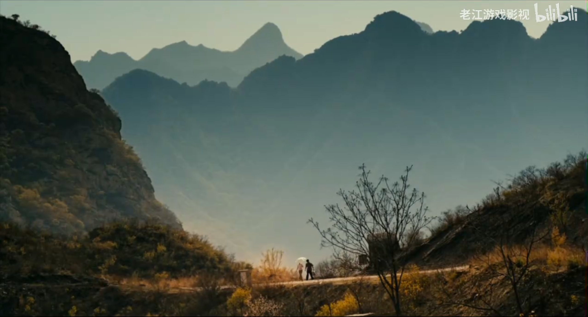
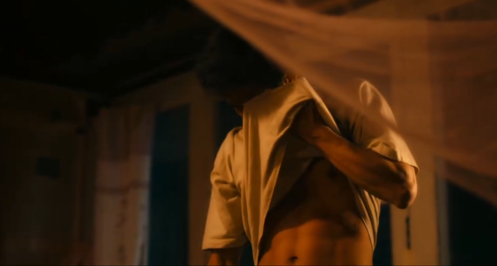
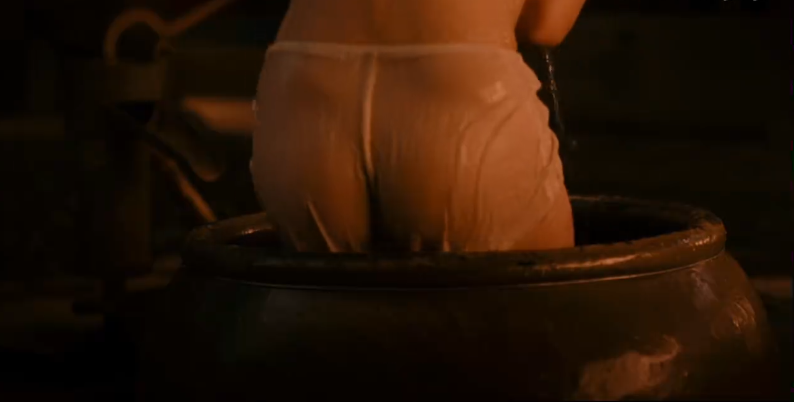
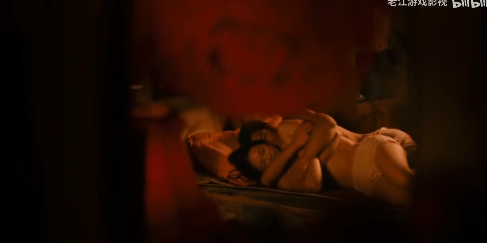
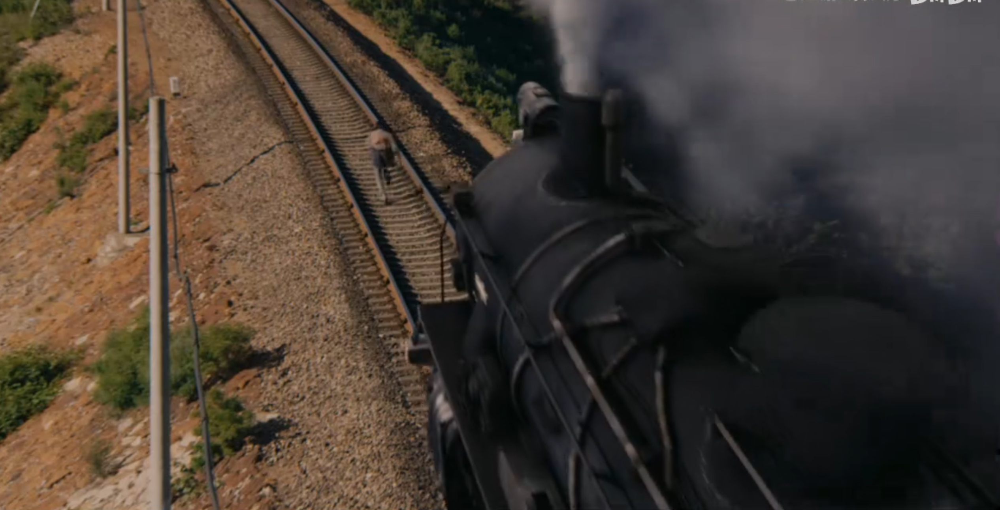
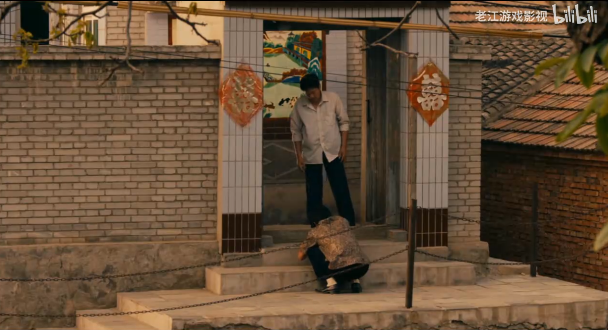
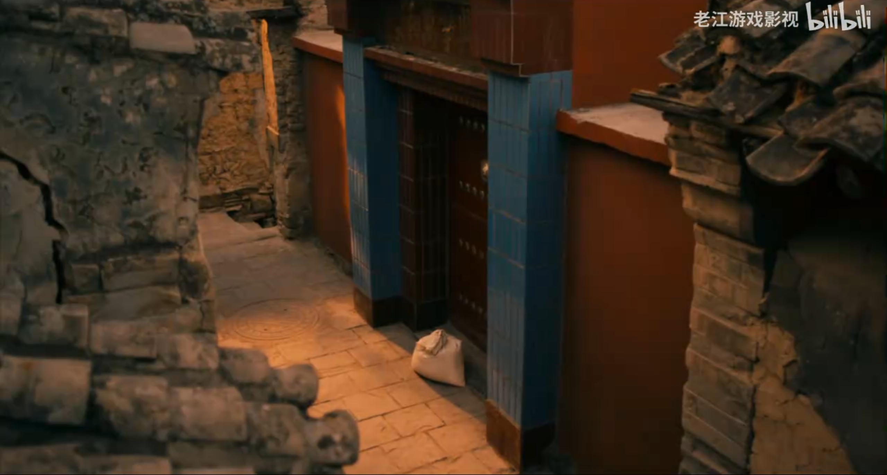

丁庄梦到最爱
完全出于巧合，我在找张艾嘉的同名电影《最爱》时，偶然发现这部所谓的“公益”电影。河南艾滋村的背景相当吸引人，而前半部分的剧本水平相当高，假如能换一些不那么脸熟的演员，再好好丰富一下后半段，完全称得上中国现代电影的沧海遗珠（对我而言）。

后来一查，该片导演是顾长卫，他更出名的身份的是《孩子王》《红高粱》《霸王别姬》《阳光灿烂的日子》《鬼子来了》等的摄影。就电影而言，《红高粱》我尤其印象深刻，因为是在高中晚自习统一放过的；其余的，我也或多或少读过小说原作：阿城的三王；王朔《动物凶猛》。电影也好，小说也罢，都是国内现代有头有脸的作品。
同样的，《最爱》也改编自“知名”作家阎连科的作品《丁庄梦》。我对阎连科的了解开始于高中图书馆找到的一本《风雅颂》。读完后我反复查询翻找阎连科的其他作品，可惜只有这一本。阎连科的书，有的是还没发行就被禁了；大部分是曾经发行过但最终还是被禁了；只有像《风雅颂》这种少部分被认为大概是人畜无害的作品，才能堂而皇之的摆在图书馆的铁架上，不知还能坚挺多久。
看完《最爱》的隔天早晨，我才搜到它和《丁庄梦》的联系。不是毫无预兆，但我还是很惊讶：开头的背景设定隐约有荒诞的意味，但显然导演在后半段使劲把它拉回了主旋律，我没看出来那些黑色幽默原来出自阎老之手；另一个原因是《丁庄梦》我只读过四分之一。
不断出现的熟悉面孔让我时不时感到很出戏，只需看一眼演员表即知：主演章子怡、郭富城、陶泽如、濮存昕、蒋雯丽、王宝强、蔡国庆，姜文、冯小刚客串。电影的后半段属于章子怡郭富城二人共同卖肉，十五年前的郭富城确实气质出众，可与Brad Pitt相比；章子怡的身材，半脱不脱，也确实让人叫好；也难为顾导，要把一本禁书拍成国内能上映的三级片类似物，的确得好生下一番功夫。



剩下的，王宝强的表演和同年放映的《树先生》别无二致，姜文开着火车头撞向郭富城的场景是我觉得最好的镜头，整个电影的荒谬主题在火车加速时体现得淋漓尽致。死亡是必然的，求死而不能，以为战胜命运，最后又狼狈奔逃。

另一方面，顾导当摄影不是没道理，好几帧让我觉得完美的画面。

一个站着，一个蹲着，所处境况立分；

一袋米，是大哥最后无情的关怀。我说不喜欢后半段，就是在这里。大哥这个角色足够引人注意，完全可以自成一线，来挽救最后俗不可耐的爱情和拯救。大哥带来卖血的风气，给贫穷带来财富，同时带来死亡的阴影；资本对乡村的侵犯，这原本是话递到嘴边的；不过这恐怕会带来不必要的麻烦。
关于卖血的文学创作，出名的就是《许三观卖血记》和《丁庄梦》，但是也有黄立宇的《叫血记》这种近似于非虚构的表达。其特别之处在于从血站工作人员角度出发，是近一年我在《收获》上看到的比较好的作品。